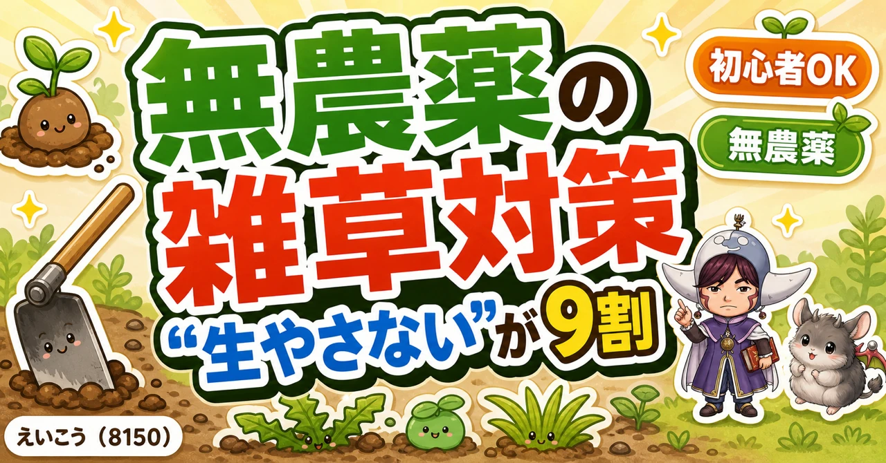
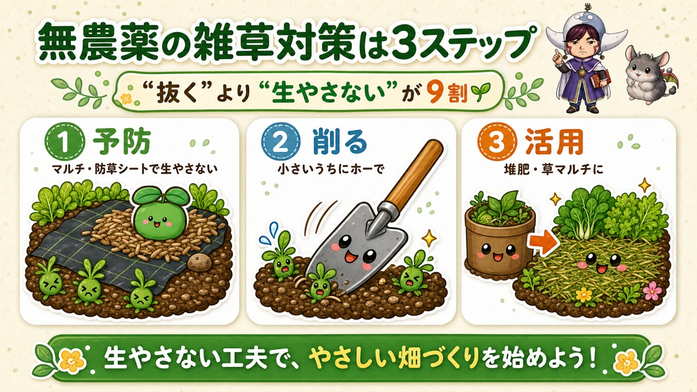
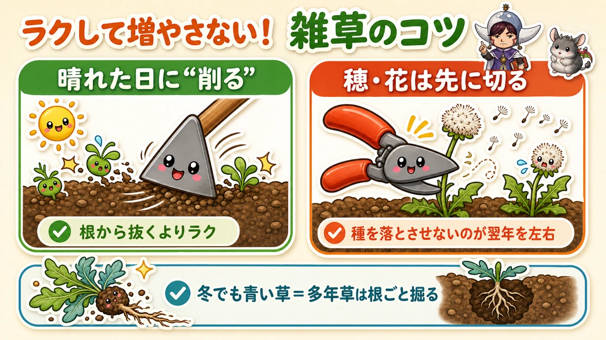
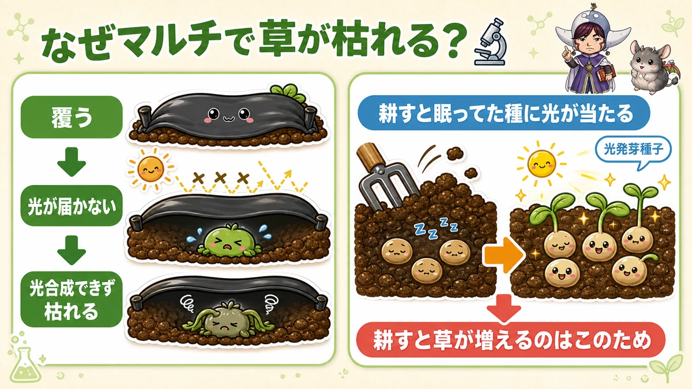

家庭菜園の雑草対策ガイド｜抜く・刈る・覆うを場所と草の状態で選ぶ

📖 この記事の目次
この記事で分かること
- 雑草の管理は『新しく生えるのを抑える』『育った草を減らす』『次の種を落とさせない』に分けて考えます。
- 野菜のすぐ近く、通路、空いている区画では、同じ草でも処理の優先順位が変わります。
- 小さな草は表面を浅く削る方法が使えます。地下の根や茎から繰り返し出る草には、別の対処が必要です。
- 草を敷いて使うなら、花や種、生きた根、虫、病気の様子を先に調べます。
- 防草シートは張ったあとも点検します。端・接合部・破れから草が伸びていないかを見るのがコツです。
- 『全部抜く』『全部残す』を先に決めるより、野菜への影響と、その後に管理できるかで選びます。
草取りを終えたはずなのに、次に畑へ行くともう緑。雑草、仕事が早いんですよね。そこで毎回全部をきれいにしようとすると、収穫より草取りがメインになってしまいます。
このページでは、草の名前をたくさん覚えるより先に、目の前の草をどう扱うかを整理します。草が野菜を隠しているなら、まず株の周囲を。花や穂が目立つなら、種を増やさない作業を。地面が広く空いているなら、覆って管理する方法を選びます。
『草が一本もない畑』を目標にしなくても大丈夫です。ただ、野菜が草に埋もれたり、種が次々に落ちたりする状態は避けたいところ。どこまでなら自分で見続けられるか。その範囲に草を収めていく、という考え方です☺️
いま困っている方は『失敗の見分け方』から読んでください。これから区画を準備する方は『早見』と『作業の手順』が入口になります。方法の説明が食い違って迷ったら、『説明が分かれていること』へ戻ると、比べる条件が見えてきます。
早見：雑草対策（ひと目で分かる目安）
時期と草の状態の目安
- 冬〜春の準備：土づくりのときに、繰り返し芽が出る根や地下の茎、シートの傷みを確認します。冬でも伸びる草があるので、寒いから休止とは決めません。
- 3月ごろ：小さな芽を見つけた段階で処理する説明があります。月よりも、実際に発芽が始まったかを優先してください。
- 4月ごろ：草が増え始める時期の点検をこまめに行います。前年に草を大きく育てた場所は、落ちた種から芽が出ることを想定します。
- 5月ごろ：雨の多い時期を迎える前に、株元と通路の草を減らしておきます。梅雨のない地域や、季節の進み方が違う場所では、雨と気温の変化に合わせます。
- 夏：作物との競合に加え、花や穂、種の状態を優先して見ます。全面の作業が難しいときも、種が落ちそうな部分を放置しないようにします。
- 秋〜冬：11月ごろまでを一つの管理の区切りとする説明があります。ただし、すべての地域で11月に成長が止まるという意味ではありません。
- 草丈：5〜10cmほどで刈る管理例があります。草を利用する方法での目安で、全草種に共通する刈り時ではありません。短くても花や種があれば先に処理します。
- 伸びる速さ：一週間で約10cm伸びた例が説明されています。毎週必ずその速さで伸びるわけではなく、短期間で野菜を囲むことがある、という注意です。
- 再点検：処理の4日後に小さな草が見つかった例もあります。『取ったから当分見なくてよい』とは考えず、水やりや収穫のついでに地面を見ます。
これらの日付は、作業の見当をつけるためのものです。寒い地域の3月と、暖かい地域の3月を同じ畑として扱うと、草の姿が合わなくなります。カレンダーを見たあと、足元の芽と野菜の大きさを見て調整しましょう。
覆う・乾かす・分解する目安
- 草の乾燥：一週間ほど干したあとに裏返し、さらに乾かした例があります。裏側が青いままなら未乾燥です。日数だけで終了せず、全体の状態を確かめます。
- 乾草の保管：半乾きの草をまとめて置くと、カビが出る心配があります。保管用に束ねるのは、乾いたことを確かめてからです。
- シートの補修：およそ5cm四方の穴へ、50cm四方ほどのシートを重ねた実演例があります。穴の大きさと補修材の大きさは別です。どの傷にもこの寸法で足りるとは限りません。
- シートの固定：端に30〜40cmほどの長い固定ピンを使う説明があります。土の硬さや埋設物、製品の設置方法を確認して選び、長さだけで風対策を済ませません。
- シートの寿命：製品表示と設置後の傷み方で変わります。使用から1〜2年でほつれや破れが見つかる例もあり、表示された耐用年数まで点検不要とはいえません。
- 袋での堆肥化：月一回程度混ぜ、3〜6か月を目安に分解させる説明があります。材料が崩れて土のようになった状態を確認する方法で、時間だけで完成を決めません。
- 積んだ草の分解：半年後に山の底側が堆肥になった観察例があります。上まで全部同じように分解した、という結果ではありません。
- 根の深い草：境界で50cm以上掘る対策が示された例があります。ただし、一般の草取りの深さとして採用する数字ではありません。深い作業が必要な状況と、小さな草の処理は分けます。
雑草対策には、野菜の育て方のような共通の『株間』『収穫日数』『追肥の回数』はありません。草の種類、発生場所、育てている野菜、使う資材で変わるためです。数字を足して立派な計画にするより、どの状態になったら次の作業をするかを決めるほうが役立ちます。
場所から方法を選ぶ早見
- 野菜の株元：草と野菜を見分け、小さいうちに手で抜くか、野菜を傷つけない範囲で処理します。
- 苗や芽の近く：道具を大きく振らず、作物の位置が分かる状態を先に作ります。芽が小さい間は草の利用より、作物を守ることを優先します。
- うねの表面：細かな草は浅く削る方法を検討。すでに覆っているなら、植え穴と端を確認します。
- 通路：歩ける幅を確保し、草を処理してから防草シートを張る方法があります。つまずく浮きや、接合部の隙間を残さないようにします。
- 外から草が入る境界：地上の草丈だけでなく、地下のつながりを調べます。同じ線上に再生するなら、表面だけの処理を繰り返さないようにします。
- 収穫後の空き区画：野菜がなくても種を増やさない管理を継続。次の栽培まで放置する場所にしません。

図を見ながら、自分の区画の『株元』『通路』『空き場所』を指してみてください。全部に同じ方法を使わなくていい、と分かるだけでも、作業の組み立てが楽になります。
作業の手順（時期の順）
準備：草を取る前に区画を見渡す
- 野菜が育っている場所、歩く場所、次に植える場所を確認します。
- 草が野菜の葉を隠していないか、株元へ入り込んでいないかを見ます。
- 花や穂、乾いた種らしい部分がある草を探します。
- 前に処理した場所から同じ形の芽が出ているかを確かめます。
- 今日の作業を『株元を空ける』『種の部分を回収する』『通路を覆う』など、場所と目的で決めます。
最初から端の草を一本ずつ抜き始めると、時間がなくなったときに肝心の野菜が埋もれたままになりがちです。先に全体を見れば、今日どこへ手をかけると作物を守れるかが分かります。
草の名前が分からなくても、ここまではできます。背が高いか、作物のすぐ横か、種を落としそうか、同じ場所から戻ってきたか。目で確かめられる情報を使うところから始めましょう。
冬〜春：土づくりと一緒に再生する草を確認する
- 空いている区画と境界を歩き、冬でも葉が残っている草を探します。
- 繰り返し出る場所では、無理なく確認できる範囲で地下の様子を見ます。
- 長く横へ伸びる茎や、芽が出そうな節を持つ部分があれば、小さな一年草と同じ処理にしません。
- 取り出した生きた地下の部分は、別に集めます。細かく切って畑へばらまかないようにします。
- 残った部分から再生していないか、その場所を次の点検でも確認します。
地上を刈ると、一度はきれいに見えます。でも地下から広がる草では、そこが終点になりません。土の中に残った茎の節から芽を出すことがあるためです。取ったものをそのまま土へ混ぜると、草を減らすつもりで再生する材料を戻してしまいます。
ただし、地下の根があるからといって、どの草も深く掘ればよいわけではありません。野菜が育っている場所で掘り返せば、野菜の根まで傷つける心配があります。大きな根の対策は、区画が空いている時期や、作物から離れた境界で考えます。
冬に青い葉があることだけで、多年草と断定もしません。寒い時期にも育つ一年草があります。名前が分からない場合は、季節の色より『同じ地下の部分から出直してくるか』を記録し、草の特徴を調べてから方法を絞ります。
植え付け前：覆う場所の草を減らし、隙間を点検する
- 通路や空き場所で、すでに伸びている草を処理します。
- 石や太い茎など、シートを持ち上げたり傷つけたりしそうなものを確認します。
- 使う防草シートの設置方法と、水が通る仕様かどうかを調べます。
- 端と接合部が開かないように配置し、指定された方法で固定します。
- 中央に浮きが残っていないか、歩くと足が引っかからないかを確認します。
- 張ったあとに風や雨があれば、めくれと水のたまり方を見直します。
『敷いたら終わり』にしないのがポイントです。真ん中がきれいでも、端がめくれたらそこに光が入ります。接合部が開けば、その線に沿って草が育ちます。面全体を眺めるだけでなく、ふちを一周見てください。
うねで使うマルチと、通路で使う防草シートは、使用場所と製品の仕様を確認して扱います。色が黒いから同じもの、とまとめないようにしましょう。野菜を植える位置には必要な開口部があり、そこは別に草を取る場所になります。
固定ピンを使う場合は、土に刺さることだけでなく、端を押さえられているかを確認します。長いピンを使う説明もありますが、深く刺す場所に何があるか分からないまま、力任せに打つ手順にはしません。設置場所に合う固定を選んでください。
春：芽が小さいうちに表面を処理する
- 水やりや野菜の観察のときに、地面の小さな芽を探します。
- 野菜の芽と草を区別します。種をまいた列が分からない場合は、先に列の位置を確認します。
- 作物から離れた細かい草には、草削りの道具を浅く動かす方法を使います。
- 株のすぐ近くは手作業へ切り替えます。野菜の茎や根へ刃を向けないようにします。
- 取った草に種や生きた根が残っていないかを見て、敷いて使えるものと回収するものを分けます。
浅く削る方法は、地表近くの小さな草を処理したいときに向きます。大きな草を無理に同じ道具で何度も削るより、草の状態に合う方法へ替えたほうが作業を組み立てやすくなります。
立ったまま使う道具は広めの場所、小回りの利く道具は狭い場所という使い分けができます。ただ、道具の名前だけで性能を決めるものではありません。刃の形や重さ、手元の扱いやすさを見ます。野菜の間に届かないなら、そこで手作業に戻って大丈夫です。
削った草を残す場合は、その後に乾いているかも見てください。湿った土の上で根が生きたままなら、再び根づくことがあります。『地上から離れた』と『枯れた』は別の状態です。
雨の多い時期の前：株元と歩く場所を優先する
- 苗が草に囲まれていないか、植え穴を順に見ます。
- 葉が小さい野菜の周囲で、草だけが先に伸びていないかを確認します。
- うねの端と通路の草を減らし、野菜へ近づける状態を作ります。
- シートの接合部、固定した場所、傷んだ部分を点検します。
- 一度に全部できないときは、作物の周囲と種をつけそうな草を先に終えます。
雨が続くと、草に水が供給される一方、作業できる日が減ります。雨の多い季節に入る前に手をかけるのは、その後の負担を小さくしたいからです。ただし、一回の作業で夏の草がなくなるわけではありません。
特に玉ねぎやニンニクなどの植え穴は、覆われた面が広くても油断しやすい場所です。穴から伸びた草が葉の間へ入り込むと、引き抜くときに作物を巻き込みます。小さいうちなら見分けやすく、手も入れやすいので、面より穴を見てください。
夏：花や穂を先に確認して、種の持ち越しを減らす
- 草丈だけでなく、先端に花や穂、種になりそうな部分があるかを見ます。
- すでに種が落ちそうなら、その部分を揺らして散らさないように回収します。
- そのあと、野菜を囲んでいる草を刈るか抜くかして減らします。
- 地下から繰り返し再生する草は、回収した部分を他の草と混ぜません。
- 草を敷いて使う場合は、種の部分が混ざっていないかを再確認します。
- 次に来たときも、同じ場所で新しい花や穂が出ていないか見ます。

大きな草を全部処理できない日は、種を増やさない作業から始める方法があります。ただ、穂を取っただけで株元の競合が解消するわけではありません。野菜が囲まれているなら、そこは続けて空けます。目的を分けて考えると、途中で止めた場合の残りの作業も分かります。
種が落ちたあとに草を抜いても、その種まで全部回収できるとは限りません。だから、乾いて散る状態になる前に見つけたいんですよね。高さだけを見ていると、低いところで種をつけた草を見逃します。
暑い日の作業は、区画を分けて無理のない範囲で進めます。『今日は植え穴だけ』でも、その場所の野菜を守れます。全面を終えるまで休まない、という計画にしなくて大丈夫です。
刈ったあと：使う草を選び、乾かして敷く
- 花や種がある草、再生しそうな根や地下の茎、虫や病気が気になる草を外します。
- 使う草は乾かす場所へ薄く広げます。厚く積んだまま、表面だけを見て乾燥済みと決めません。
- 裏側も確認し、必要に応じて返して乾燥を進めます。
- 敷く前に、その野菜が小さい芽の段階ではないか、土寄せなど次の作業が残っていないかを確認します。
- 地面を覆いながら、野菜の芽や茎の位置が見えるように敷きます。
- 敷いたあとに土の湿り方、新しい草、虫の様子を見ます。
草マルチは、刈った草や乾草で地面を覆う使い方です。地面へ直接当たる雨や光を減らし、乾燥や夏の温度変化を和らげる働きが説明されています。ただし、何cm敷けばどの草も抑えられる、という共通の厚さは示されていません。
土が見える隙間ばかりなら、そこから草が出ることはあります。反対に、幼い野菜を覆い隠すほど盛れば、作物の観察ができなくなります。敷き終えたときに『地面を覆えたか』『野菜を確認できるか』の両方を見てください。
草を使う方法には、その場で刈ったものを置いて乾かす説明もあります。別の場所へ運んで保管する場合は、湿ったまままとめないことが必要です。その場で枯らす作業と、乾草を作って保管する作業は、同じ手順にしません。
収穫後〜秋：空いた区画も管理を続ける
- 作物を片づけたあとに、新しく出た草を確認します。
- 次に植える日まで間があるなら、地面を覆うか、芽を小さいうちに処理する計画を決めます。
- 残した草が種をつけていないか、通路と境界も見ます。
- シートの傷みを確認し、小さな局所の穴か、接合部全体の問題かを分けます。
- 次の栽培の準備で、再生する地下の部分を戻していないか点検します。
収穫が終わると、ついその区画を見る回数が減ります。草にとっては空いている場所なので、そこに種を増やす時間を与えないようにしたいところです。育っている野菜がない時期も、次の栽培につながっています。
植物の細い根をすべてふるいで取り除く必要はないという説明と、再生する草の地下の部分を回収する説明は、対象が違います。『根を残してよい』を、どの草の根でも戻してよい意味にしないでください。
堆肥にする場合：敷く作業とは別に扱う
- 土の表面へ敷くのか、別の場所で分解させるのかを決めます。
- 分解させる場合は、採用する方法の材料と管理手順を確認します。
- 草が乾いて軽くなっただけか、組織が崩れて分解が進んだのかを見ます。
- 使う前に、分解していない根や茎、残った種が気にならないかを確認します。
- 畑へ戻したあとも、そこから草が再生していないかを見ます。
草を積む、袋に入れる、土へ埋めるという説明には、それぞれ違う条件があります。期間だけを抜き出してつなぐと、どの方法でも同じ日に完成するように見えてしまいます。草の利用を初めて行うなら、まず種のない草を乾かして敷く使い方から整理すると、状態を目で追いやすくなります。
堆肥化を、草の種や根を必ず無害にする処理とは考えません。温度や水分、材料の混ざり方によって、山や袋の中でも分解の進み方が違います。全体の完成を確認できない場合は、草取りで回収したものを急いで畑へ戻す必要はありません。
失敗の見分け方（症状→原因→やること）
処理した場所からすぐに緑の芽が出る
- 症状：草を減らした場所に、また芽が並んでいます。
- 考えられる原因：土に残っていた種から新しく発芽した場合と、生きた根や地下の茎から再生した場合があります。
- やること：小さな芽が別々に出ているか、同じ線や同じ株の位置から戻るかを確認します。新しい芽なら小さいうちに処理し、地下から戻る草なら表面の処理だけで終えません。
『草取りが下手だった』と決めなくて大丈夫です。前回の草は取れていても、次の種が芽を出すことがあります。対処を変えるために必要なのは、取れたかどうかの自己採点より、今回の芽がどこから来たかです。
作業の前後を同じ向きで写真に残すと、再発する場所を比べられます。境界沿いだけに戻るなら、外から地下の部分が入る可能性も考えます。写真だけで草種は断定しませんが、次に地面を調べる場所を絞れます。
抜いた草を置いたら再び根づいた
- 症状：取って置いた草に、緑の葉が残り、地面へ根が伸びています。
- 考えられる原因：根が生きたまま湿った土へ触れていたことが考えられます。地下の茎の節が残る草では、その部分からの再生にも注意します。
- やること：生きているものを再度回収し、草マルチ用の乾草と分けます。株を抜いて置いた状態を、乾燥済みの材料として扱わないようにします。
草を抜いた瞬間には、作物と水分を取り合う場所から離せています。でも、その草の生命活動がすぐ全部止まるとは限りません。土の付いた根が湿っていれば、戻ってくる余地があります。
敷いて使うと決める前に、手に持った草の下側を見るのがコツです。葉ばかり見ていると、根の土や地下の茎を見落とします。判断に迷う草は、無理に再利用へ回さなくてOKです。
野菜が草に囲まれ、どちらも引っ張りそうになる
- 症状：野菜の葉と草が重なり、株元が見えません。
- 考えられる原因：小さい草を見逃している間に、植え穴や株間で大きくなったことが考えられます。
- やること：先に野菜の茎の位置を確認します。草をまとめてつかまず、作物を巻き込まないように少しずつ処理します。次からは植え穴を点検場所に加えます。
ここで一気に引き抜くと、草だけでなく野菜まで動いてしまうことがあります。広い面を片づける勢いを、そのまま株元へ持ち込まないようにしましょう。作物が見えてから、草へ手をかける順番です。
草を取ったあとも、野菜が小さい理由をすべて雑草のせいにしません。水、気温、植え付け時の状態など、別の要因もあります。まず競合を減らし、その後の葉や芽の動きを観察します。
シートの中央はきれいなのに、端だけ草が伸びる
- 症状：ふちや接合部に沿って、帯のように草が出ています。
- 考えられる原因：光が入る隙間やめくれがある場合、外側から地下の茎が入る場合があります。
- やること：草を処理して、シートの下と端を確認します。固定と接合部を見直し、同じ場所から再生するなら地下の様子も調べます。
中央の効果があるからこそ、端の問題が目立つこともあります。全面をすぐ張り直す前に、どこが開いているかを見ます。ただし、接合部が広く傷んでいる場合は、局所の穴と同じ補修で済むとは限りません。
ふちを少し直しても風で何度も戻るなら、同じ位置へ同じ留め方を繰り返すだけでは解決しにくい状況です。風が入る側、地面の状態、固定できる位置を確認して設置を組み直します。
小さな穴から草が出て、花までついている
- 症状：シートの一部が破れ、その場所だけ草が育っています。
- 考えられる原因：穴から光が入り、そこで伸びた草を点検時に見逃したことが考えられます。
- やること：花や種があれば先に回収します。草を減らしたあと、穴より余裕のある補修材を製品の方法に沿って固定します。周囲のほつれも確認します。
穴は小さくても、そこに育った草が種を飛ばす場所になることがあります。『面積が小さいから放っておこう』ではなく、草の成長段階で優先順位を決めます。
補修した面が浮いていると、つまずいたり、また光が入ったりする原因になります。覆えたかだけでなく、平らに収まっているかを見てください。補修は穴を隠す作業で終わりません。
シートの上に雨水がたまる
- 症状：雨のあとにシート上へ水が残っています。
- 考えられる原因：製品の透水性、表面の汚れ、地面のくぼみ、水の流れ方などが関わります。編み目の細かさだけでは原因を決められません。
- やること：まず製品の仕様を確認し、周囲と比べてどこに水が残るかを見ます。シートが水を通すかと、地面が水を受け入れられるかを分けて点検します。
『防草シートなら雨は全部通る』という前提にすると、水たまりを見ても原因が分からなくなります。通すと説明される製品もあれば、比較した二枚で水のたまり方が違った例もあります。
見た目の網目だけで別製品の性質まで判断せず、表示と設置後の様子を合わせます。水の出口がない地形なら、資材だけ替えても同じ場所へ水が集まることがあります。
敷いた草から新しい草が増える
- 症状：草マルチを置いた部分で芽が多く出ています。
- 考えられる原因：運んだ草に種や生きた地下の部分が混ざっていた可能性があります。もともとの土の種が隙間から発芽した場合もあります。
- やること：敷いた材料を調べ、種や生きた根が残っていれば回収します。材料が原因か、地面の隙間が原因かを分け、次に敷く草の選別を見直します。
草が出たから即『草マルチは効果なし』とはしません。反対に、草マルチの効果を信じて、生きた根を残し続けるのも違います。何が増えているかを見ると、使う材料を変えるべきか、敷き方を変えるべきかが分かります。
花がついている草を別の場所から持ってくると、そこで育っていなかった草の種も持ち込めます。量を集める前に、材料を選ぶ。ここが再利用の大切な入口です。
乾かして束ねた草にカビが出た
- 症状：保管した草の内側が湿り、カビが見えます。
- 考えられる原因：半乾きのまま束ねたことや、保管中に湿ったことが考えられます。
- やること：その束を乾燥済みとして使うのをやめ、内側の状態も確認します。次からは薄く広げて返し、全体が乾いてから保管します。
表側だけ茶色でも、裏側がまだ青く湿っていることがあります。乾燥の判断は、見える上面だけでは足りません。持ち上げて裏を確かめる作業を入れてください。
一週間干したら完成、と日付で決めないようにします。雨が続けば乾き方は変わりますし、積んだ厚さでも違います。材料の状態を見るほうが、天気に振り回されにくくなります。
刈っても毎回同じ草が戻り、作業量が減らない
- 症状：同じ場所の草を繰り返し刈り、すぐ次の作業が必要になります。
- 考えられる原因：地下から再生する草を、地上の草だけの問題として扱っている可能性があります。外からの侵入が続く場合もあります。
- やること：戻る位置を記録し、区画が空く時期に地下や境界の対策を検討します。すぐに全面を変えられない間は、野菜との競合と種の発生を抑える管理を続けます。
刈る方法自体が間違いという意味ではありません。地上を短く保つ目的には役立っていても、地下の再生源をなくす目的は果たしていない、ということです。どちらを目指しているかを分けると、方法の評価もしやすくなります。
説明が分かれていること
草は残すのか、取り除くのか
- Aという説明：草を低く刈って利用し、土へ有機物を戻す管理があります。作物より高くしないことや、種をつけさせないことが条件です。
- Bという説明：作物の周囲の草を取り、養分の競合や虫のすみかを減らす管理があります。
- どう考えればよいか：草を残す目的だけでなく、作物への影響と点検できる頻度で選びます。生きた草を残すことと、刈った草で地面を覆うことは別です。
どちらも同じ『雑草対策』と呼ばれるので、結論だけ読むと反対に見えます。草を土へ戻して使いたいのか、作物の周囲を管理しやすくしたいのかで、作業の組み方が変わります。
残す管理にも刈り取りが必要です。『抜かない』を『伸ばし続ける』に置き換えると、作物より背が高くなったり、種を増やしたりしてしまいます。管理に通える余裕がないなら、使うことより作物の周囲を空けることから考えましょう。
根を土に残してよいのか
- Aという説明：草を地際で刈り、地下の根を残す方法があります。土の中の有機物を利用する考え方です。
- Bという説明：冬の草を根ごと除き、生きた部分をすき込まない方法があります。地下の部分から再生する草にも、回収する説明があります。
- どう考えればよいか：草の性質と、その後に再生するかを見ます。すべての根が一度の刈り取りで枯れるとは考えません。
収穫後の野菜の細い根を残す話まで、雑草の地下の茎へ当てはめないようにします。根が土に役立つことと、その部分が新しい芽を出すことは、同時に起こり得る別の論点です。
名前が分からない草では、残したあとに何が起きたかを確認してください。繰り返し出るのに『根は土へ戻るから大丈夫』と説明だけで押し切らず、その場所の観察を次の判断に使います。
雑草を残すと虫は減るのか、増えるのか
- Aという説明：草に集まる虫と、それを食べる天敵の関係を利用する考え方があります。
- Bという説明：草を抑え、虫が集まる場所を減らす考え方があります。
- どう考えればよいか：どちらも、すべての野菜の害虫を必ず減らす方法とはいえません。野菜の葉裏や芽を見て、被害が増えていないかを確認します。
草に虫がいた、というだけでは、その虫が作物を傷めるか、ほかの虫を食べるかは分かりません。草の量と野菜の被害を直接つなぐ前に、作物の実際の様子を見ます。
残す方法を試しても、野菜が食べられているなら、草を残す方針の維持を優先しません。株元を管理し、作物の虫対策を見直してください。逆に、草を全部減らしても、別の場所から虫が来ることはあります。草取りだけで虫対策が終わる、とは考えないほうが判断しやすくなります。
防草シートは何年使えるのか
- Aという説明：耐久表示をもとに、長期間の使用を見込む説明があります。
- Bという説明：表示より短く使う想定や、使用中のほつれ・破れを点検する説明があります。
- どう考えればよいか：製品が違えば比較の条件も変わります。耐用年数は商品の表示を確認し、設置後の状態を別に見ます。
年数の説明を比べるときは、表示上の耐久年数と、実際に使った期間を区別します。長持ちしたという一つの例が、その製品をどの場所へ張っても同じ期間使える保証になるわけではありません。使用条件が違う数字から、一律の交換時期を決めないようにします。
価格を比べるときは、幅や長さ、製品の仕様、販売時期をそろえて見ます。安い・高いを価格だけで比べるより、使いたい面積、遮光性、透水性、設置方法を確認します。いま張ってあるものの交換判断は、表示年数だけでなく、草が出る傷みや固定の状態で行います。
防草シートなら水は通るのか
- Aという説明：雨水が抜けるシートの説明があります。
- Bという説明：比較したシートで、水がたまるものと、たまりにくいものがあったという説明があります。
- どう考えればよいか：『防草シート』という分類だけで透水性を決めません。手元の製品と設置場所を確認します。
細かい網目なら必ず水を通さず、粗い網目なら必ず通す、という単純な選び方にもできません。素材や構造の違いを、目の見え方だけで置き換えないようにします。製品の表示で確認したうえで、雨のあとに地面ごと観察してください。
種がある草も堆肥にすれば大丈夫なのか
- Aという説明：土中の発酵で根や種まで分解されるとする説明があります。
- Bという説明：地面に敷く草には花や種を入れないようにする説明があります。
- どう考えればよいか：埋めて分解させる処理と、地表へ敷く使い方は異なります。分解の説明を、種の付いた草を直接敷く理由には使いません。
堆肥化したものでも、材料全体の状態が同じとは限りません。底側だけがよく分解した観察例を、山のどの部分にも種が残らない保証へ広げないようにします。
再利用は魅力的ですが、草を増やす材料まで戻すと、次の草取りが増えます。選別が難しい草は回収し、使える材料だけを利用する形で十分です。全部を土へ戻さないと失敗、という話ではありません。
冬の透明な覆いは、草を生やすのか枯らすのか
- Aという説明：冬に発芽を促し、出てきた草をあとで除く方法があります。
- Bという説明：光を遮る覆いで、草の生育を抑える方法があります。
- どう考えればよいか：透明な覆いと遮光する覆いでは、目的が違います。覆うという動作だけをそろえて、同じ効果があるとは考えません。
冬に発芽させて取る方法は、夏の高温を利用する処理とは区別します。冬の透明被覆をしたから土中の種が熱で全部死ぬ、と説明する根拠にはなりません。
発芽を促す方法は、そのあとに除草する段取りまで必要です。覆って放置するだけの予防と混ぜず、具体的な方法を採用する場合は、覆いを外す時期や土を動かす条件もそろえて確認します。
よくある質問
最初に何をすればいいですか
野菜の株元が見えるかと、種を落としそうな草があるかを確認してください。作物が隠れている場所を空け、花や穂がある草を優先します。最初から区画全体を仕上げる予定にしなくても大丈夫です。
草は全部抜く必要がありますか
場所と管理の目的によります。低く刈って利用する方法もありますが、野菜の周囲を空け、種をつけさせず、再生の様子を見続けることが必要です。草を残すことを、点検しない理由にはしません。
週末しか畑へ行けなくても管理できますか
見られる頻度に合わせて、覆う場所と手で処理する場所を分けます。来たときは株元、花や種、シートの端を先に点検してください。何日おきなら必ず間に合う、という共通の間隔はありません。草の成長が速い時期には計画を見直します。
花や穂だけ取れば十分ですか
種の持ち越しを減らすための応急的な作業にはなります。ただし、野菜の光や水、養分を取り合う状態は残ります。株元が混み合っていれば、草の体も減らし、その後にまた花や穂が出ていないか見ます。
草の名前が分からないと対策できませんか
小さいうちの処理や、株元を空ける作業は、名前が分からなくても始められます。繰り返し同じ場所から出る草、地下でつながる草は、特徴を調べると対策を選びやすくなります。葉の色や季節だけで種類を断定しないようにします。
小さい草にも大きな道具を使っていいですか
作物との距離と、道具を安全に動かせる範囲を先に見ます。広い通路と狭い植え穴で、同じ動かし方はできません。苗の近くでは、小さな草でも手作業へ切り替えるほうが扱いやすい場合があります。
シートを張れば草取りはなくなりますか
覆われた面の草を抑えられても、植え穴や端、接合部、破れた部分は別に点検します。シートの上へ土や種が載ることもあるので、草が出た位置を確認してください。張る前の草の処理と、張ったあとの手入れを組み合わせます。
マルチの植え穴が草だらけになったらどうしますか
作物の位置を確認し、巻き込まないように草を処理します。植え穴は野菜のための開口部なので、全部ふさいで解決する場所ではありません。次の点検では、葉だけでなく穴の地面も見てください。
乾いた草なら何でも敷けますか
乾いていても、種が付いていれば別の草を増やすことがあります。再生しそうな地下の部分、虫や病気が気になる材料も選別します。乾燥の確認と、使う材料の確認は、両方必要です。
草マルチはどの野菜にも向きますか
芽が小さいものや、これから土寄せするものでは、敷いた草が観察や作業の邪魔になることがあります。生育の段階と次の作業を先に確認してください。地面を覆う利点だけで、全部の株元へ一斉に敷く方法にはしません。
刈った草は、すぐ肥料になりますか
草は分解を経て土へ戻りますが、敷いた直後の追肥と同じ働きを見込むものではありません。植物性の堆肥は、強い肥料効果より土の状態を整える役割が説明されています。野菜の栄養管理は、その野菜の育て方に沿って別に考えます。
草が生えたので、土の酸度を変えるべきですか
草だけで土の酸度を決めないようにします。生えている種類には、酸度以外の環境も関わるためです。土の調整が必要かを考えるなら、作物の適する条件と、測った土の状態を確認します。
プランターでも同じ対策が必要ですか
容器の中に草が出たら、野菜を傷つけないうちに取り除きます。周囲から種が入ることもあるので、『培養土なら一本も生えない』とは決めません。狭い容器では、畑の通路を覆うような作業より、見つけた芽の確認が中心になります。
取った草を別の空き地へ捨ててもいいですか
他人の土地や管理されていない場所へ移して解決しないようにします。種や地下の部分から、その場所で広がる心配があります。貸し農園などでは指定された残渣の置き場と扱いを確認し、分からない草を勝手に持ち込まないでください。
冬は草取りを休んでも大丈夫ですか
成長が遅くなる草がある一方、寒い時期にも葉を広げる草があります。野菜の周囲と境界を見て、小さなうちに扱える草を減らします。冬の作業は、暖かくなったあとの負担を減らす準備にもなります。
草が多すぎて、もう追いつきません
まず育てている野菜の周囲を確保し、種が落ちそうな部分を優先します。そのあと、通路と空き区画を分けて整えます。いま全部できないことより、どこを終えて、どこを次にやるかが分かる状態を作りましょう。
学ぶ：雑草が増えるしくみ🔬
光を遮ると、葉を持つ草の成長を抑えられる
葉を広げた植物は、光を使って光合成を行います。光合成は、光のエネルギーを使って、自分の体を作る材料を生み出す働きです。地面を覆い、草へ届く光を減らす方法は、この働きに関わっています。
ただし、光を遮った瞬間に、すべての植物が枯れるわけではありません。根や地下の茎に蓄えがある草は、その力で芽を伸ばすことがあります。隙間へ芽を伸ばして葉を出せば、そこからまた光を使えます。
だからシートの端や破れが重要なんです。広い面を覆っていても、草にとって使える出口が残ることがあります。隙間を点検する手順は、見た目を整えるだけの作業ではなく、草が光を利用する場所を減らす作業でもあります。
種の発芽と、葉の光合成は別の話

種には、光が発芽の合図の一つになるものがあります。こうした性質を持つ種では、土の表面近くへ出て光を受けることが、芽を出す条件に関わります。ただし、すべての雑草の種が同じ反応をするわけではありません。
『光がないと葉が十分に働けない』という光合成の話と、『光が発芽のきっかけになる種がある』という話は、分けて理解します。種は芽を出すとき、自分の中の蓄えも使います。芽が出ることと、そのあと長く育つことは同じ条件ではありません。
図は仕組みをつかむ入口として見てください。地面を覆えば土中のすべての種がなくなる、という図ではありません。覆っている間に発芽や成長を抑えられても、外したあとに草が出ることはあります。
耕したあとに草が増えるのはなぜか
土を動かすと、それまで深い場所にあった種が表面近くへ移ることがあります。光、水、温度などの条件が変わり、発芽できる種が芽を出すと、耕したあとに草が増えたように見えます。
つまり、耕したことが種を新しく作ったわけではありません。もともとあった種の位置や環境が変わる、という見方です。一度芽を取っても、次に土を動かすと別の種が発芽する可能性があります。
この仕組みから、草が出るたびに深く土を動かすことを、唯一の対策にはしません。小さい草を浅く処理する目的と、栽培の準備として土を整える目的を分けます。耕す必要がある場面までなくすという意味ではなく、何のために土を動かすかを確認するということです。
種で増える草と、地下から増える草
種から出た芽を減らすには、新しい種を落とさせない管理がつながります。一方、地下の茎などから増える草では、種だけを止めても、すでに地中にある再生する部分が残ります。
地下の茎にある節は、次の芽が出る場所になることがあります。切り分けたものを土へ戻すと、離れた場所で芽が出る心配もあります。地上の葉がなくなったから、その草の増える力も全部なくなった、と判断しないことが必要です。
実物を見るなら、取った草の根元を観察してみてください。細い根が集まっているのか、横へ続く茎があるのか、節のような部分が見えるのか。名前を暗記する前に、増え方の違いに目が向くと、処理後に何を点検すればよいかが分かります。
草を敷くことと、草を分解させること
草で地面を覆うと、土へ届く光や、雨が直接当たる状態が変わります。これは、草がまだ形を保っている間にも働く『覆い』の役割です。
分解は、それとは別の時間をかけた変化です。微生物などの働きによって植物の組織が崩れ、土の中の有機物の循環につながります。敷いた日から同じ量の養分がすぐ野菜へ届く、という変化ではありません。
乾燥も分解とは違います。茶色く乾いた草でも、形が残っていれば、まだ堆肥と同じ状態にはなっていません。乾草を作る作業では乾いているかを、堆肥化では組織が崩れているかを見ます。この違いが分かると、草の利用方法の説明を混ぜずに読めます。
草から土の様子を考えるときの注意
どんな草が、どこに生えているかは、環境を観察する入口になります。よく湿る場所と乾く場所で違いがあるか、踏む場所と踏まない場所で違うかを見るのは、畑を知る手がかりです。
ただ、一種類の草を見て『この土は酸性』『土づくりに成功した』と決めることはできません。草の分布には、水分、光、種が届いた経路、これまでの管理も関わります。草の存在だけで、土の数字や改善方法を確定しないようにします。
観察したことを、測定や管理の記録とつなげるのが理科の面白いところです。『ここだけ戻ってくるのは何でやろ』と場所を比べる。それだけでも、草取りが単なる反復作業から、次の対策を考える時間へ変わってきます🌱
まとめ
雑草対策は、草の量だけで決めず、場所・成長段階・増え方を見て方法を選びます。覆える通路は覆い、小さな草は扱いやすいうちに処理し、野菜の近くは作物を確認しながら手を入れます。
- 株元が見えて、野菜が草に隠れていない
- 花や穂、種を落としそうな部分を確認した
- シートの端・接合部・穴を点検した
- 再生する地下の部分を、土へ戻していない
- 敷く草は種・根・虫・病気の様子を確認した
- 作業後も同じ場所の芽と野菜の状態を見る予定がある
草を残す管理にも、取り除く管理にも、目的と条件があります。自分の区画で野菜がどう育っているか、次に来たときも見続けられるかを基準にしてください。方法の名前だけで正解を決めなくても大丈夫です。
今日の入口は、育てている野菜の株元を一周見ることです。草が入り込んだ植え穴を一つ空ける。種が落ちそうな草を一本見つけて回収する。そこまでできたら、次は通路、という順番で進められます。
草取りのたびに全面を完璧にする計画より、次に何を見るかが分かる計画を。野菜を守れる場所から、無理なく整えていきましょう☺️